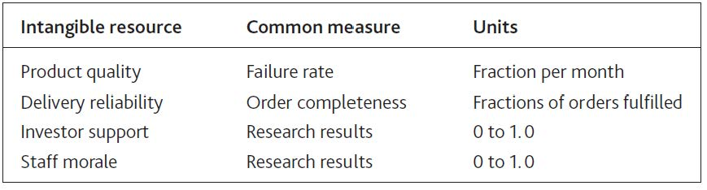

A senior partner at a major global management consultancy once told me, “We don’t include intangible items in our client work, because they are undetectable, unmeasurable, and unmanageable.” Wrong on all three counts!
The atmosphere in a company where people are confident and motivated feels quite different from that in an organization where staff are under pressure. In the same way, salespeople know the difference in a customer’s reaction when they try to sell products with a bad reputation, and CEOs certainly notice the hostility of investors who have lost confidence in their management.
Organizations increasingly measure intangible factors. Product and service quality, staff skills, and motivation now commonly feature in management reports. Even investor sentiment is regularly tracked and scrutinized by many companies.
The achievements of exemplary managers in difficult situations make it clear that the third accusation—that intangibles are unmanageable—is also untrue. Effective factory managers can improve product quality; inspirational sales managers can boost sales force morale and confidence; capable chief executives can reassure anxious investors.
All that is lacking in most cases is a clear link between changes to these critical items and the organization’s performance. Executives know these things matter but need a clearer picture of how they work and how much.
Some intangibles have simple measures, as shown in Figure 8.1 "Measures for Some Intangible Resources". If you have such measures, use them instead of talking in generalities. Performance outcomes cannot be understood through qualitative comments like “We have highly motivated staff” or “Our delivery performance is excellent.” Worse still, we often find management making such comments with no factual evidence to back them up or even when there is evidence to the contrary!
Figure 8.1 Measures for Some Intangible Resources
Many soft factors can be measured on a 0 to 1 scale, where 0 means a complete absence of the resource and 1 is the maximum level you can imagine. Here are some tips:
A clue that you are dealing with an intangible resource comes when the word “perceived” features in your likely explanation for what is going on. Perceived menu quality is key, for example, to a restaurant’s ability to win new customers, because those people do not have any direct experience of what they will be served until they have actually eaten there. The perceived appeal of working in the media industry is key to encouraging young people to seek a job with radio and TV companies. The perceived quality of management is vital for entrepreneurs to win over investors. This is hardly a new idea; the core principle in cognitive psychology is that state of mind drives behavior.
It is easy to view quality as a driver of customers’ decisions, but certain qualities do not exhibit the characteristics of a resource, meaning they do not fill up gradually over time. For example, if you run a call center that has enough trained staff to handle 1,000 calls per hour, quality will be fine so long as calls arrive at this rate or less. However, if 1,100 calls per hour start arriving, quality will drop instantly. If call rates drop again, quality will quickly recover.
Failure rates or faults in manufactured items, on the other hand, have to be worked at over time, with managers constantly seeking to identify and remove the sources of the problem. This quality, then, does fill up gradually, reaching a limit as it approaches 1. Continual improvement has been the motivation for many quality initiatives such as total quality management and six sigma.
From this it may seem that service qualities respond immediately, and product qualities behave like resources. Unfortunately, things are not quite that simple. If you have plenty of staff, but your service quality reflects levels of skill, then this quality too will gradually improve or deteriorate over time. In this case, the correct approach would be to capture the resource of staff skill, which is filled up by training and drains away when staff leave or forget.
There are two kinds of behavior that particularly interest us in so far as they affect the overall performance of our organizations:
Sometimes these choices are helpful—when people choose to join you or do more of what you want—and sometimes they are unhelpful. Negative situations occur where people do more of what you do not want: such as customers denigrating your company to others, or staff criticizing your efforts to make important changes.